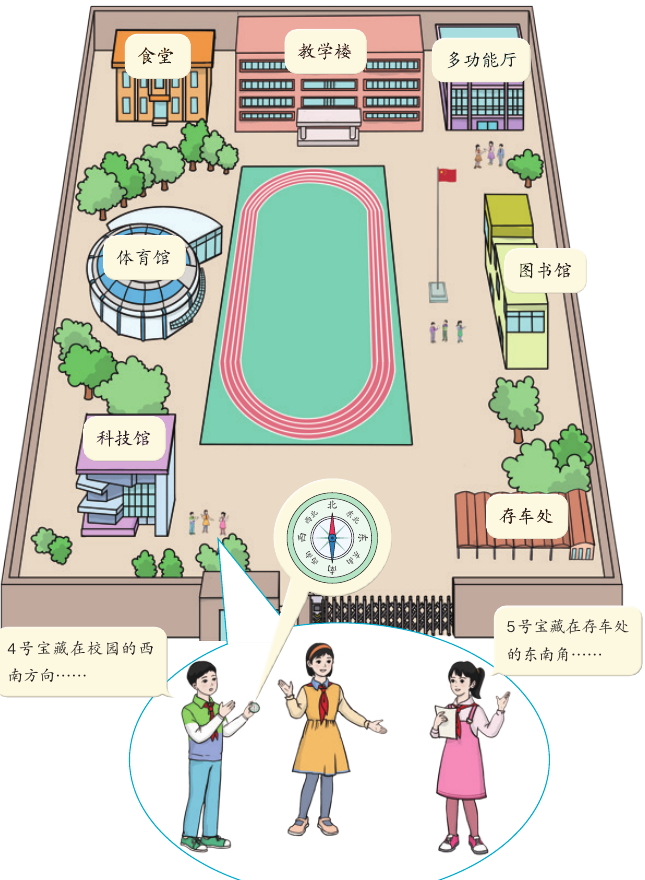
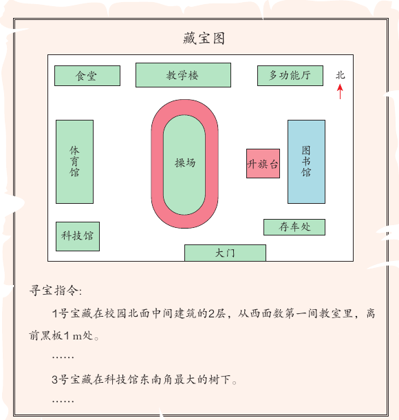
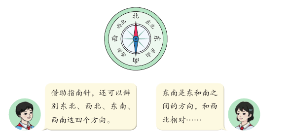
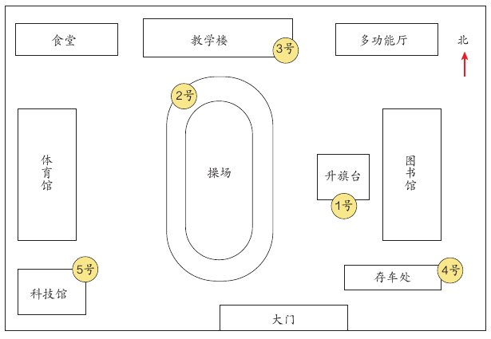
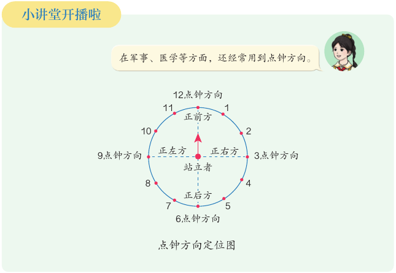

寻找宝藏：方向与平面图
校园里藏了宝藏。要找到它，你得看懂藏宝图，认得八个方向，还要读懂寻宝指令。这一课是一次综合与实践活动，最后你也要自己藏宝、写指令。
学完本课，你能够：
01寻找宝藏是什么活动
先说结论：这是一次在校园里做的数学活动。你要用方向来描述位置，再按描述找到宝藏。

图里的同学这样说宝藏的位置：
- 4 号宝藏在校园的西南方向……
- 5 号宝藏在存车处的东南角……
你看，这两句话都用了方向词：西南、东南。第二句还说了一个大家都认识的地方：存车处。说位置时，方向和地点都很重要。
- 校园寻宝：读懂藏宝图，认识八个方向，按指令找宝藏。
- 绘制藏宝图：自己画图，标方向，写寻宝指令。
- “藏宝—寻宝”大挑战：小组之间交换藏宝图，比一比谁先找到。
02读懂藏宝图
先说结论：藏宝图是一幅校园平面图。它标出了各个建筑物的位置，右上角的箭头指向北。

藏宝图下面写着两条寻宝指令：
1号宝藏在校园北面中间建筑的2层，从西面数第一间教室里，离前黑板1 m处。
……
3号宝藏在科技馆东南角最大的树下。教材第 103 页
先读第一条。“校园北面中间建筑”是哪一座？图上北面有三座建筑：食堂、教学楼、多功能厅。中间的一座是教学楼。所以 1 号宝藏在教学楼里。
再读第二条。图里的同学问：“东南角”是什么意思？科技馆是一座房子，它有四个角。东南角就是靠东、又靠南的那个角。
03认识八个方向
先说结论：除了东、南、西、北，借助指南针还能辨别东北、西北、东南、西南四个方向。合起来是八个方向。

借助指南针，还可以辨别东北、西北、东南、西南这四个方向。教材第 104 页
东北在东和北之间，西北在西和北之间，西南在西和南之间。
东和西相对，南和北相对。东北和西南相对，东南和西北相对。
下面的方向盘，点一个方向，看它的名称和它相对的方向。再点“出一题”，用藏宝图上的建筑练一练。
题目里的方向按教材第 103 页藏宝图中建筑的大致位置判断，以操场为中心。这是课程作者设计的练习。教材原文请你拿着指南针和藏宝图，到校园里看一看。
教材接着请你拿着指南针和藏宝图，到校园里看一看。学校东北、西北、东南、西南四个方向上都有哪些建筑？在藏宝图上，校园的西北角是食堂，东北角是多功能厅。西南角是科技馆，东南角是存车处。
04照着寻宝指令找宝藏
先说结论：图上只能标出宝藏的大概位置。要找到准确位置，还要靠寻宝指令。

教材里两位同学讨论了这幅图：
建筑物内、外的场地很大，图上宝藏的位置只是一个大概位置，还要设计寻宝指令……
寻宝指令可以描述宝藏的准确位置，包括方向、标志物……教材第 105 页
下面的演示把这幅藏宝图画在格子上。每条指令都从大门出发，告诉你向哪个方向走几格。点“走一步”，小人按指令走一段。走完后，看小人停在哪个宝藏上。
简化模型：宝藏位置按教材第 105 页的藏宝图摆放；“走几格”是课程作者为了练方向加的，不考虑建筑挡路。教材的寻宝指令用方向和标志物描述位置，不用格子。
05绘制藏宝图，设计寻宝指令
先说结论：如果你是藏宝人，画藏宝图时要标出方向，也要标清宝藏的序号和位置。然后再写准确的寻宝指令。
没有方向标，别人不知道哪边是北，图就看不懂。
每个宝藏有一个序号，在图上标出大概位置，方便藏宝和对照指令。
画好以后，按教材的要求检查一遍：
- 藏宝图是否把方向和藏宝位置都标好了？
- 设计的寻宝指令是否准确？
- 每组评出一幅最佳藏宝图。说一说为什么选它，它的寻宝指令从哪些方面描述了宝藏的位置。
下面轮到你当藏宝人。选一个宝藏，用方向按钮拼出从大门出发的路线。点“试走”，看小人能不能走到宝藏那里。
简化模型：格子和“走几格”是课程作者设计的，不考虑建筑挡路。到达后生成的指令句子，后半句是课程作者给每个宝藏写的标志物说明。
06藏宝—寻宝大挑战与点钟方向
先说结论：最后一个活动是小组之间比赛。一组藏宝，另一组照着藏宝图和指令去找。
- 藏一藏：按照本组最佳藏宝图把宝物藏起来。藏宝时可以根据实际修改寻宝指令。不同小组要错开时间藏宝，注意保密。藏完以后，隐去藏宝图上标出的宝藏图标。
- 找一找：与其他小组交换藏宝图，一起去寻宝。哪个小组最先找完宝藏，就作为最优寻宝小组接受采访。
- 问一问：采访最优寻宝小组，看看他们是怎样快速找出所有宝藏的。
小讲堂：描述方向只能用八个方向吗
教材的“小讲堂”提出了两个问题：描述方向时，只能用指南针上的八个方向吗？确定位置除了和方向、距离有关，还和什么有关？教材给了一个例子：点钟方向。

| 点钟方向 | 12 点钟 | 3 点钟 | 6 点钟 | 9 点钟 |
|---|---|---|---|---|
| 对站立者来说 | 正前方 | 正右方 | 正后方 | 正左方 |
活动结束后，教材的“成长小档案”请你从五个方面评价自己：
- 能理解四面八方的含义
- 能根据平面图正确地辨认方向
- 能正确绘制平面图
- 能通过合作交流解决问题
- 能积极地参与活动
07自测与速记
图上只能标出宝藏的大概位置。
速记表
| 要点 | 一句话 |
|---|---|
| 八个方向 | 东、南、西、北，东北、西北、东南、西南 |
| 相对的方向 | 东—西，南—北，东北—西南，东南—西北 |
| 看平面图 | 先找方向标；藏宝图标示了建筑物的位置 |
| 寻宝指令 | 图上只是大概位置；指令说准确位置，包括方向、标志物 |
| 画藏宝图 | 一定要标出方向，标清宝藏的序号和位置 |
| 点钟方向 | 正前方 12 点钟，正右方 3 点钟，正后方 6 点钟，正左方 9 点钟 |
相关课程
教材：人教版《数学》四年级上册（2022 课标修订版）综合与实践“寻找宝藏”第 102–107 页。标为“补充”的内容和模拟演示是课程作者的解释，不是教材原文。